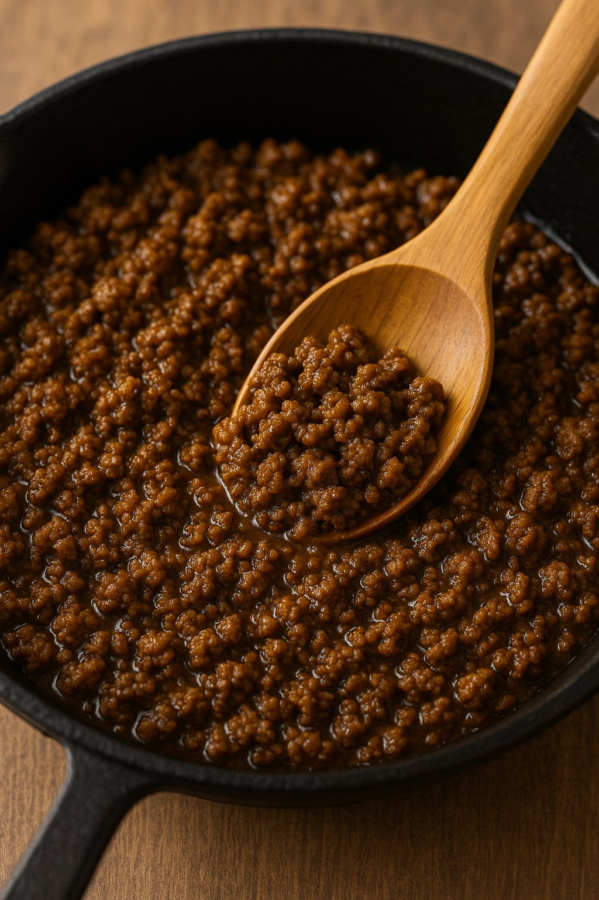

Ground Beef Taco Meat
Home

Description
This recipe for the best ground beef taco meat is a keeper, the basic recipe you need to make tacos at home.
Ingredients
- 1 ½ pounds ground round
- 1/2 cup finely chopped onion
- 3 tablespoons taco seasoning, or more to taste
- 2 tablespoons tomato paste
- 3/4 cup water
Steps
- Heat a large skillet over medium-high heat. Add beef and cook, breaking up clumps with a spatula, until fat renders out and beef begins to brown, about 4 minutes. Add onion and cook, stirring constantly until onion is softened and beef is crumbly, about 4 minutes. Drain fat if desired.
- Add desired amount of taco seasoning and cook 1 minute. Add in tomato paste and water and cook, using a spoon to loosen any browned bits from the pan, and stir until well combined. Reduce heat to medium-low and simmer until thickened, about 5 minutes.